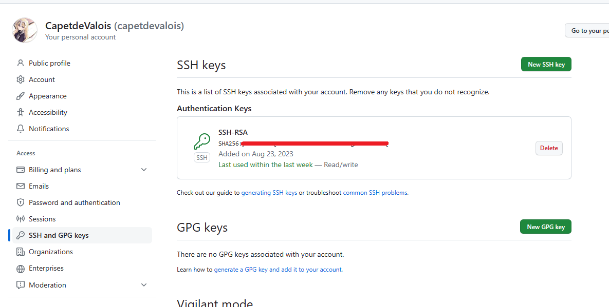
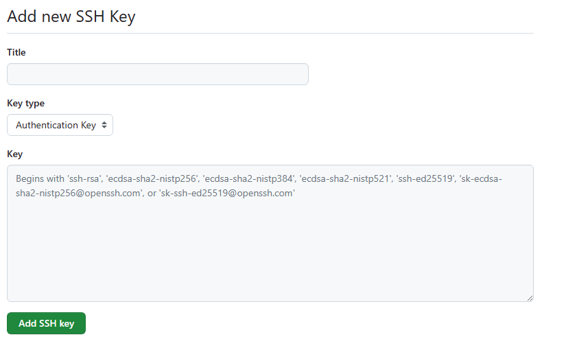
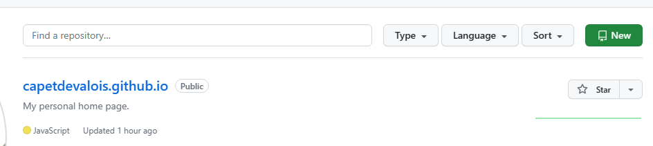
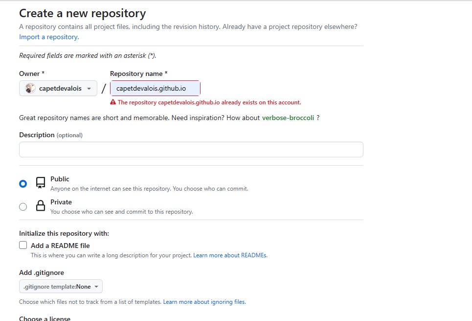
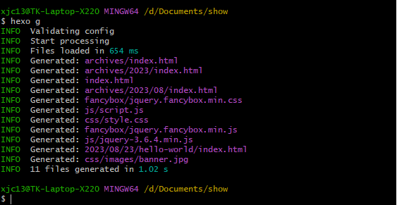
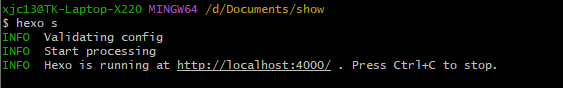
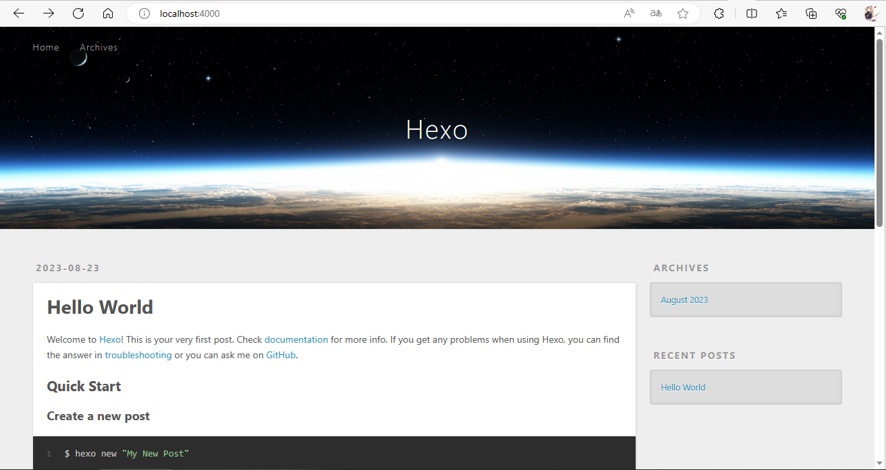

前言
一步步对照着教程来配置个人主页实属不易，所以第一篇文章就来整理一下笔者配置个人主页的整个流程，供各位参考。
准备工作
技术选型
一般提到搭建个人博客大家通常会想到WordPress。WordPress可以说是全球最流行的网站建设平台了。上至大型网站，下至动态博客，世界上约 30% 的网站都是基于WordPress搭建的。但是，WordPress有一项致命的缺点，那就是贵。
那么，有什么平台可以代替WorldPress呢？答案就是 Hexo+GitHub。
Hexo+GitHub 与 WorldPress 的优缺点
- 成本
WordPress必须要配置一个云服务器或者虚拟主机，其动辄每年两百多元的租费，对于笔者这种学生而言实在是无法承担。而在GitHub上托管静态网站是免费的。除了服务器租费以外，笔者也买不起域名，而在GitHub上托管会”送”一个类似于xxx.github.io的二级域名。这样也就拥有了互联网世界的门牌号。 - 维护
WordPress建立的个人主页属于动态站点，当用户访问量增多时，服务器的负载也会增大，访问速度也会明显下降，用于优化的维护成本较高。Hexo建立的主页属于静态站点，通过git命令即可实现文章的发布，维护成本和操作难度较低。
因此，笔者最终决定使用Hexo + GitHub进行个人主页开发。
Git 与 GitHub
使用Hexo+GitHub个人主页开发的第一步是准备Git与GitHub。那么为什么第一步要准备Git与GitHub呢？因为需要使用Git向GitHub传输文件，GitHub是托管网站的服务器，Git则是连接服务器的工具。
首先我们需要注册一个GitHub账号。访问GitHub官网并注册一个账号。然后我们需要在自己的计算机中安装Git，访问Git-下载以获取Git。如果觉得官网的下载速度太慢也可以从笔者自己建的资源分享站小卡佩的垃圾场获取安装包。
完成上述步骤后，已经拥有了Git和GitHub账号了，接下来就要借助SSH协议让Git和GitHub连接上。SSH协议全称Secure Shell，即 “安全外壳协议”。该协议通过数据加密和认证机制实现了设备互联的安全保障，相较于FTP、SFTP等明文传输协议更具有安全性。
SSH的加密机制是非对称加密，也就是说它会在本地生成两把”钥匙”：一把是公钥，需要传到GitHub上；一把是私钥，留在自己的电脑上。Git安装后会默认附带SSH，所以可以省去安装SSH的步骤。
绑定 Git 与 GitHub
随便找个文件夹，右键打开Open Git Bash here，键入伪指令：1
ssh-keygen -t rsa
该伪指令的作用就是生成这两把钥匙，加密算法采用RSA，之后一路敲空格默认即可。这时就可以在用户文件夹下的 .ssh目录中找到这两把密钥：公钥id_rsa.pub和私钥id_rsa。
接下来需要将公钥部署在GitHub上，然后用SSH密钥登录的方式进行连接。
第一步 单击头像，在打开的列表中选择Settings；
第二步 在左侧列表中打开SSH and GPG Keys，并在右侧页面中单击New SSH key按钮；

第三步 在打开的页面中随便输入一个标题，并且把id_rsa.pub中的公钥复制到上面；

第四步 单击Add SSH key，完成。
建库
到现在这一步，我们已经成功绑定了自己电脑的Git和你的GitHub帐号了。GitHub仓库就是托管你的个人主页的容器，所以首先要把这个容器准备好。
第一步 打开GitHub主页，单击头像，在打开的列表中选择Your repositories；
第二步 单击New新建一个仓库；

第三步 输入仓库名后点击Create repository按钮(请忽略图中报错，因为笔者已经建了一个同名库了)，完成。

安装 Hexo
这一部分需要用到npm，它是node的包管理工具，因此首先要准备好node环境，访问下载 | Node.js以获取node，也同样可以访问作者的小卡佩的垃圾场获取安装包。
首先在本地新建一个文件夹。这个文件夹以后就是个人网站的项目文件夹，所以一定要自定义好路径。进入该文件夹，右键选择Git Bash here，键入以下伪指令安装cnpm：1
npm install -g cnpm -registry=https://registry.npm.taobao.org
再用以下伪指令安装Hexo:1
cnpm i -g hexo-cli
安装完成后，键入命令初始化Hexo项目：1
hexo init

然后键入以下伪指令生成静态网页，在项目根目录中会生成一个/public目录，/public目录中就是个人网站文件：
1 | hexo generate |

最后我们在本地服务器测试一下网站，键入以下命令开启本地服务器：
1 | hexo server |

将上图下方的链接复制到浏览器，就可以看到初始站点，如下图所示：

看完以后就可以用Ctrl + C关闭本地服务器。
NexT主题
Hexo自带的Landscape主题有点丑，需要挑选一款漂亮的主题，笔者推荐使用NexT主题。一方面是因为NexT黑白简约的风格便于读者阅读，另一方面是因为NexT社区的活跃人数较多，遇到问题比较方便解决，现在的v7.8.0版本拥有许多第三方插件，可以很方便地进行用户交互、页面美化、站点统计、百度推送功能。几乎涵盖了所有动态站点的功能。
打开个人主页项目根目录，右键打开git bash窗口，键入以下命令将NexT下载到本地/themes目录内：1
git clone https://github.com/theme-next/hexo-theme-next themes/next
修改根目录下的站点配置文件_config.yml的Site部分和theme字段：1
2
3
4
5
6
7
8
9title: 标题
subtitle: 副标题
description: 描述
keywords: 关键词
author: 作者
language: 语言(zh-CN)
timezone: 时区(Asia/Shanghai)
theme: next
NexT主题还包含了四种子主题，分别为Muse、Mist、Pisces、Gemini，进入路径/theme/next，修改主题配置配置文件_config.yml。1
2
3
4
5# Schemes
scheme: Muse
#scheme: Mist
#scheme: Pisces
#scheme: Gemini
将想选择的子主题前的注释去掉，就可以了，可以将每一个都试一试看看效果，挑一个喜欢的就可以了。
设置完成后在根目录下打开git bash，依次键入：1
2
3
4
5hexo clean #等价于 hexo cl
hexo g
hexo s
#或者写成一行
hexo cl && hexo g && hexo s
便可以在本地服务器中启动个人主页，在浏览器中输入网址：https://localhost:4000，检查一下网页。
写作
网站设施已经准备完毕了，但是网页上只显示了Hello world这篇文章，进入/source/_posts文件夹，可以看到hello-world.md，这个路径就是主页文章的保存路径。
如果想要写文章，先进入/scaffolds目录，打开post.md，将其替换为：1
2
3
4
5
6
7
8
title: {{ title }}
date: {{ date }}
categories: #分类
tags: #标签
keywords: #关键词
description: #描述
这个post.md文件就是文章母版，如果想要做什么统一的配置，都可以在母版进行编辑。
在git bash键入：1
2hexo new post "标题"
#"post" 可省略
这条命令就是用来初始化一篇文章的。这样就可以在/sources/_post目录中找到标题.md了。写完后，用hexo cl && hexo g && hexo s命令重新生成网页文件，再打开https://localhost:4000，就可以看到自己的文章了。
部署到GitHub
现在需要把本地生成的网页文件部署到远程仓库上，这样其他人就可以访问个人主页了。
首先，键入以下命令安装部署插件：1
cnpm install hexo-deployer-git --save
安装完成后，我们进入站点配置文件/_config.yml，修改deploy字段：1
2
3
4
5
6# Deployment
## Docs: https://hexo.io/docs/one-command-deployment
deploy:
type: git
repository: 你自己的仓库名
branch: master
配置好后在终端输入：1
2
3hexo deploy
#或其缩写形式
hexo d
即可一键部署至GitHub。如果在此步骤报错，应该是没设置git config --global user.email | user.name，在终端中键入以下命令，重新hexo d一下就可以啦：1
2git config --global user.email "GitHub邮箱"
git config --global user.name "GitHub用户名"
稍等片刻，在浏览器输入https://用户名.github.io即可访问个人网页啦。
此时，个人网页已经被部署到GitHub上，在别的设备上输入这个网址也可以访问到这个网站。
结语
如果这篇文章对您有帮助，就请关注收藏一下笔者的个人主页吧~
笔者的资源网站小卡佩的垃圾场也欢迎各位下载、使用上面的资源哦~
笔者邮箱：2703998852@qq.com
如果有什么建议或者疑问，就请给笔者写电子邮件哦~